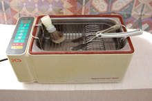
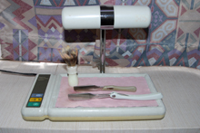
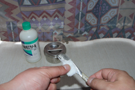
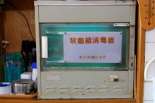

sterilization
衛生消毒
当店では、理容師法施行規則24条（以下理容師法）により定められた消毒方法により、使用する器具類や手指の完全消毒に努めています。
平成12年9月1日より、感染症対策の充実強化をはかるとの観点から、血液媒介性のウイルスにも消毒効果のある消毒方法に改正されました。
消毒の実際
理容師法では、（１）血液の付着、又はその疑いのある器具類と、（２）血液が付着していない器具類とに分類し、消毒方法を定めています。
(１) 血液の付着、又はその疑いのある器具類
カミソリ(皮膚に接したものは全て)・血液の付着又はその疑いのある器具は下記のいずれかの方法で消毒する。
- ① 煮沸消毒 ・・・ 沸騰後、器具を入れて2分間以上、煮沸する。
- ② 消毒用エタノール ・・・ 原液に10分間以上、器具類を浸す。
- ③ 次亜塩素酸ナトリウム ・・・0.1％次亜塩素酸ナトリウム溶液に１０分間以上、器具類を浸す。
※カミソリの例
１．使用後のカミソリと髭ブラシは、十分な流水で洗浄しています。

２．0.1％次亜塩素酸ナトリウム溶液の入った超音波洗浄消毒器に10分間以上浸しています。 医療現場でも使われている超音波洗浄により、より完全な消毒を目指しています。

３．消毒薬を洗い流した後、紫外線が照射される専用のトレーで乾燥しています。 トレーは熱くなっており、紫外線と熱により、乾燥中のウイルス等による汚染を防いでいます。

４．カミソリは、お客様へ使用する直前、消毒用エタノールを染ませたカット綿で、表面を消毒しています。
(２) 血液が付着していない器具類

カミソリ(毛髪のカット専用)・鋏・くし・ブラシ類は下記のいずれかの方法で消毒する。
- ① 紫外線 ・・・ 85μＷ/c㎡以上の紫外線を20分間以上照射する。
- ② 蒸し器・・・80℃以上の湿熱で10分間以上
- ③ 消毒用エタノール・・・原液を染み込ませたカット綿やガーゼで器具類を拭く。
- ④ 以下の濃度に消毒薬を希釈し、器具類を10分間以上浸す。
１．次亜塩素酸ナトリウム・・・0.1～0.01％溶液
２．逆性石ケン液・・・0.1～0.2％溶液
３．グルコン酸クロルヘキシジン・・・0.05％溶液
４．両性界面活性剤・・・0.1～0.2％溶液
当店では、医療現場でも使用されている超音波洗浄消毒器をはじめ、手指消毒には薬用ソープやアルコール消毒薬、ノロウィルスにも除菌効果がある次亜塩素酸水消毒薬を使用しています。 また、消毒用アルコールスプレー、次亜塩素酸水消毒薬スプレーも併用し、より完全な消毒に努めています。